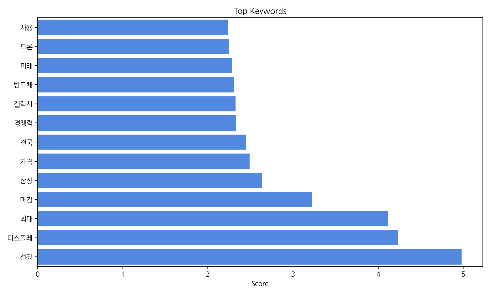
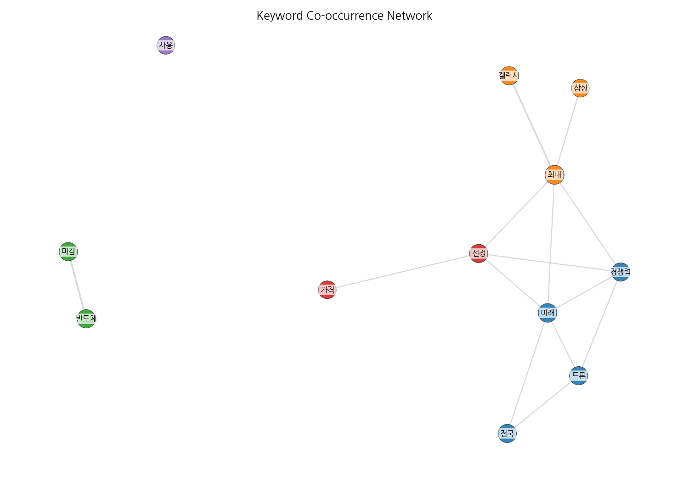
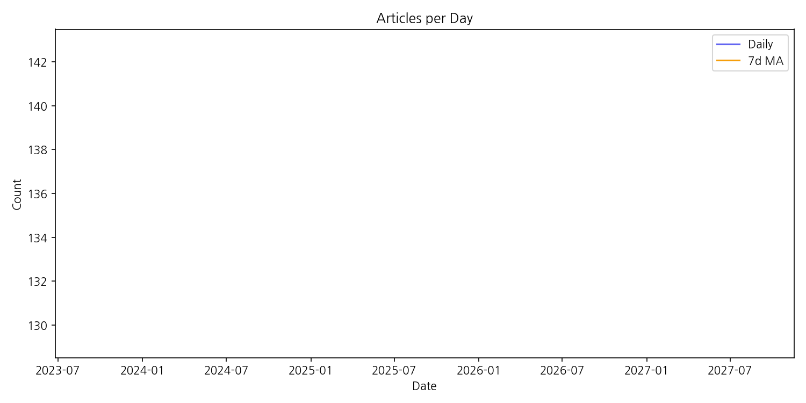

지난 기간 뉴스는 삼성전자 갤럭시 시리즈의 가격 및 판매량, 디스플레이 경쟁력, 그리고 반도체 산업 미래에 대한 관심이 최대치를 기록했다. 선정된 키워드 분석 결과, 반도체 산업의 경쟁 심화와 관련된 뉴스가 빈번하게 등장했으며, 드론 관련 뉴스는 상대적으로 적었다. 전국적인 규모의 이슈보다는 특정 기업(삼성전자) 중심의 뉴스가 주를 이루었다. AI와 관련된 뉴스는 꾸준히 등장했으나, 급증세는 아니었다. 반도체 산업의 미래와 관련된 잠재적 리스크에 대한 보도가 증가 추세를 보였고, 다음 주에는 삼성전자의 마감 실적 발표와 관련된 뉴스가 주목받을 것으로 예상된다. 계약학과 활성화를 위한 교육기관 간 협력 소식도 있었으나, 주요 트렌드는 아니었다.
| Rank | Keyword | Score |
|---|---|---|
| 1 | 선정 | 4.978 |
| 2 | 디스플레 | 4.236 |
| 3 | 최대 | 4.115 |
| 4 | 마감 | 3.221 |
| 5 | 삼성 | 2.636 |
| 6 | 가격 | 2.489 |
| 7 | 전국 | 2.447 |
| 8 | 경쟁력 | 2.332 |
| 9 | 갤럭시 | 2.326 |
| 10 | 반도체 | 2.309 |
| 11 | 미래 | 2.285 |
| 12 | 드론 | 2.245 |
| 13 | 사용 | 2.234 |



지난 기간 뉴스는 삼성전자 갤럭시 시리즈의 가격 및 판매량, 디스플레이 경쟁력, 그리고 반도체 산업 미래에 대한 관심이 최대치를 기록했다. 선정된 키워드 분석 결과, 반도체 산업의 경쟁 심화와 관련된 뉴스가 빈번하게 등장했으며, 드론 관련 뉴스는 상대적으로 적었다. 전국적인 규모의 이슈보다는 특정 기업(삼성전자) 중심의 뉴스가 주를 이루었다. AI와 관련된 뉴스는 꾸준히 등장했으나, 급증세는 아니었다. 반도체 산업의 미래와 관련된 잠재적 리스크에 대한 보도가 증가 추세를 보였고, 다음 주에는 삼성전자의 마감 실적 발표와 관련된 뉴스가 주목받을 것으로 예상된다. 계약학과 활성화를 위한 교육기관 간 협력 소식도 있었으나, 주요 트렌드는 아니었다.
| Idea | Target | Value Prop | Score |
|---|---|---|---|
| 맞춤형 AR 글래스 기반 디스플레이 솔루션 | 제조업체, 의료기관, 건설업체 등 현장 작업자를 위한 B2B 시장 | AR 글래스를 통해 작업자의 시야에 직접 정보를 제공하여 작업 효율을 높이고 안전사고를 예방한다. 작업 환경에 맞춤화된 정보를 제공하여 작업자의 편의성을 증대시킨다. 경량화된 디자인으로 장시간 착용에도 부담이 적다. | 4.0 |
| 플렉서블 디스플레이 기반의 웨어러블 의료기기 | 의료기관, 개인 사용자 | 플렉서블 디스플레이를 활용하여 사용자에게 편안한 착용감과 다양한 디자인을 제공한다. 정확하고 신뢰성 있는 생체 데이터를 측정하고, 실시간으로 사용자에게 피드백을 제공한다. 사용자의 건강 관리를 위한 다양한 기능을 제공한다. | 3.9 |
| 홀로그램 기술 기반의 고급 자동차 디스플레이 시스템 | 고급 자동차 제조업체 및 고급 자동차 소비자 | 홀로그램 기술을 이용하여 운전자에게 필요한 정보를 입체적으로 제공하여 시선 분산을 최소화하고 직관적인 정보 전달을 가능하게 한다. 고급스러운 디자인과 차별화된 사용자 경험을 제공하여 소비자 만족도를 높인다. | 3.8 |
| AI 기반의 스마트 사이니지 광고 플랫폼 | 대형 쇼핑몰, 백화점, 공항 등의 광고주 및 운영자 | AI 기반의 타겟팅 기술을 통해 특정 고객에게 맞춤형 광고를 제공하여 광고 효율을 극대화한다. 실시간 데이터 분석을 통해 광고 효과를 측정하고, 광고 전략을 최적화한다. 사용자 친화적인 인터페이스를 통해 광고 콘텐츠 변경 및 관리가 용이하다. | 3.5 |
| 투명 디스플레이 기반의 스마트 윈도우 시스템 | 건설업체, 건물 관리업체, 상업 시설 운영자 | 투명 디스플레이를 활용하여 건물의 창문을 정보 전달 및 디자인 요소로 활용한다. 건물의 에너지 효율을 높이고, 건물의 미적 가치를 향상시킨다. 다양한 정보를 실시간으로 제공하여 건물 이용자의 편의성을 증대시킨다. | 3.2 |